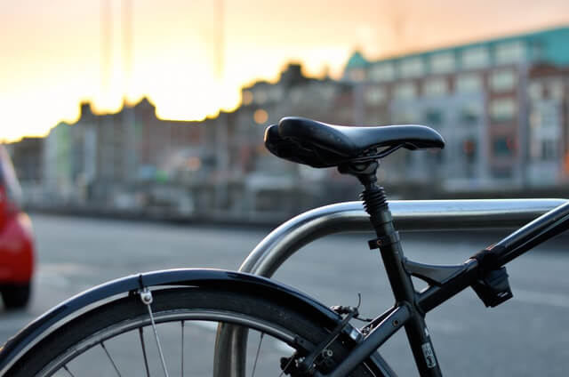

KAKERU MIYAICHI
1995年生まれ、都内の制作会社に勤務するグラフィックデザイナー。
休日は都会の喧騒を離れ、カメラをバックパックに詰めて日本各地の峠や林道を巡っています。
自転車がもたらしてくれる「風の匂い」や「自分の足で遠くまで行く達成感」を、デザインと写真で表現することがライフワークです。


1995年生まれ、都内の制作会社に勤務するグラフィックデザイナー。
休日は都会の喧騒を離れ、カメラをバックパックに詰めて日本各地の峠や林道を巡っています。
自転車がもたらしてくれる「風の匂い」や「自分の足で遠くまで行く達成感」を、デザインと写真で表現することがライフワークです。

長距離のロングライドや、毎日の通勤でも愛用しているクロモリ製のロードバイク。クラシカルな細身のフレームと、どこまでも走っていけそうな巡航性能が気に入っています。

未舗装路や林道、キャンプツーリングに特化したタフなグラベルバイク。フレームバッグをフル装備し、大自然の中でコーヒーを淹れて過ごす週末の相棒です。

愛車のポテンシャルを最大限に引き出すため、週末の洗車と細かなパーツ調整は欠かしません。自分で手を動かしてカスタムを重ねる時間も、自転車の大きな魅力の一つです。